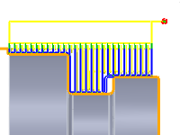
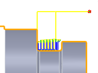

<div id="turning_useRestMachining"><p>Indique que seul le brut restant après les opérations précédentes doit être usiné.</p>
<table class="tipTable" cellspacing="10">
<tr>
<td><center></center></td>
<td><center></center></td>
</tr><tr>
<td><center><p><b>Désactivé</b></p></center></td>
<td><center><p><b>Activé</b></p></center></td>
</tr></table>
</div>